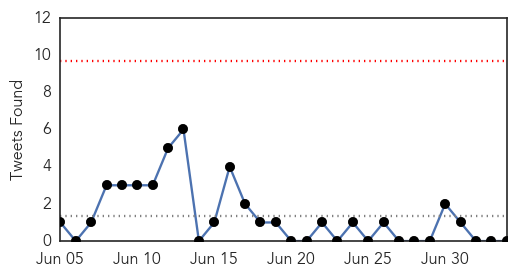

30 Day Trends
Web: 4 alerts, 6 warnings
Twitter: 0 alerts, 0 warnings
Top Articles:
- 0.999
- Another doctor at Samsung's hospital contracts MERS
- 0.998
- Number of MERS cases rises to 185 in South Korea
- 0.993
- Sudan Vision Daily
- 0.991
- Hospital discharges only Mers case after Omani ruled virus-free
- 0.962
- Take care to avoid tick bites: Sudbury health unit
- 0.947
- Samsung Medical Centre fumbles efforts to shake reputation as MERS epicentre
- 0.917
- Chicago Tribune
- 0.917
- Chicago Tribune
- 0.917
- Chicago Tribune
- 0.917
- Chicago Tribune
- 0.899
- Brain-eating amoeba kills 21-year-old woman in Bishop, Calif.
- 0.863
- Local airports on high alert against MERS
- 0.772
- Thailand's first MERS patient cured
- 0.725
- Social media report on Korean with MERS turns out to be rumor
- 0.696
- a Vaccine Tested on Monkeys Shows Promising Results
- 0.628
- Salmonella outbreak linked to poultry hatchery
- 0.608
- Today's stories from newspapers in Norfolk County
- 0.607
- Rabies down after relaunch of vaccination program
- 0.589
- Tummy troubles: PIMS receives 9,000 gastro patients in 60 days
- 0.568
- The Caledonian-Record
- 0.557
- Salmonella Typhimurium Outbreak Associated with Frozen Chicken Entrees Minnesota 2006
- 0.553
- Infested hospitals called in pest control nearly 5,000 times in one year to tackle vermin
- 0.548
- Taclée par bruno moneroe, amélie neten le clashe sur twitter
- 0.540
- Another baby with HIV may be cured
- 0.502
- People advised to take precautions against heat exhaustion
Top Tweets:
-
No tweets found for Jul 04, 2015
Web/News Articles

Tweets
Article Locations